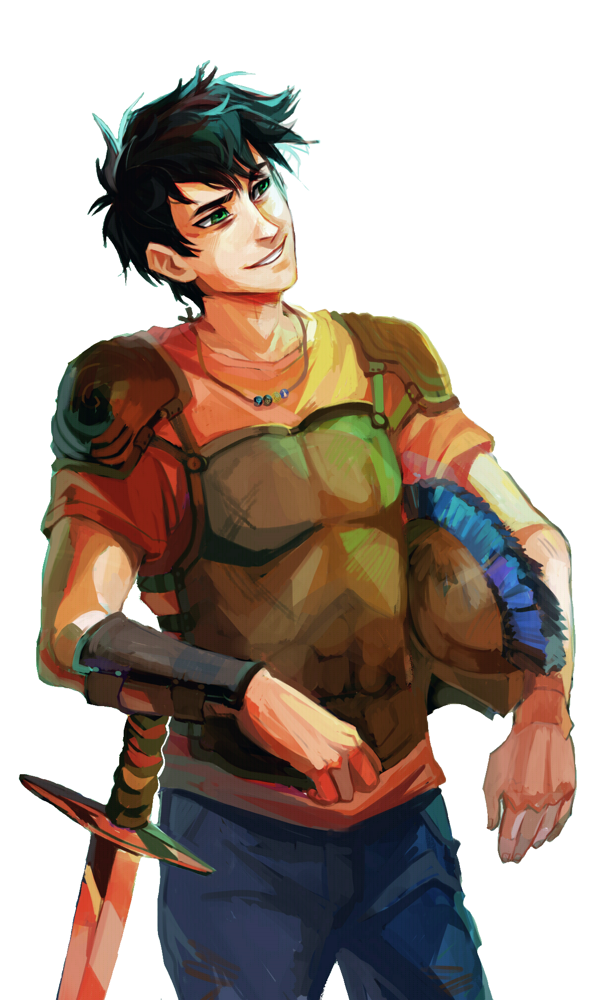

1. Percy Jackson

Percy Jackson is the 16-year-old Greek Demigod son of Poseidon, god of the sea and earthquakes.
His spheres of power are earthquakes and water, mostly the sea. His powers include: water manipulation, blood bending (he doesn't use this one often), slight air manipulation (since the air contains oxygen and oxygen contains a small part of water), tornado-making and healing in water.
He has messy raven-black hair, slightly tan skin, is average height, sea-green eyes, a strong build, due to training at Camp Half-Blood, and he usually is wearing his signature lopsided smile.
His personality is loyal, sarcastic, determined, easy-going, fun, oblivious and street-smart
My opinion on Percy is that he is a good character. His character developmetn throughout the first series was amazing, and he had some flaws which he got over. His flaws fit him well: slightly arrogant, loyal and promises too big. Percy is portrayed in the series as fun, easy-going and loveable but there is also a dark side to him, which gets fully revealed in the House of Hades.
2. Annabeth Chase

Annabeth Chase is the 17-year-old greek demigod daughter of Athena, goddess of wisdom, weaving and warcraft.
Her spheres of power are mainly wisdom. She doesn't have any powers, apart from being scarily smart and quite good at weaving.
She has honey-blonde hair, stormy grey eyes, californian-tan skin, is tall, strong build from training at camp, and usually wears a guarded expression.
Her personality is prideful, clever, mature, serious, distrustful, cold, fun and good-natured.
My opinion on Annabeth is that she is an amazing character, one of my favourites. She doesn't have any powers at all, but she is on eof the best fighters and the best strategist. I like how Rick Riordan gave the main character's love interest more depth than just being, well, the main character's love interest. Annabeth certainly doesn't need anyone's help, she defeated a cyclopes at age 7 by stabbing it in the foot with a dagger. Annabeth in the Heroes Of Olympus didn't change at all, although there are some bits I picked up on that changed her a bit...
3. Leo Valdez

Leo Valdez is the 15-year-old greek demigod son of Hephaestus, god of blacksmiths and fire.
His spheres of power are machines and fire. He has pyrokenesis, a talent he was afraid of until he was 15. He is also amazing at machine work, making small machines and doing college level mathematics at age 7.
He is latino, has curly dark-brown hair, chocolate brown eyes, is quite short, and is quite skinny, since when fighting he usually builds something instead of fighting. He also hasn't trained at Camp Half-Blood much.
His personality is funny, smart, determined, scared at times, prideful, ambiverted and generally jocular person
My opinion on Leo Valdez is that I think he is one of the best developed characters I have ever read about. He has gone through a lot of trauma when he was little, and he hides it all with humour as well, which I think Rick write really well. Leo was one of those characters you instantly love, due to his humor and personality. Everyone who has read the Heroes of Olympus loves Leo (there is no one who hates Leo Valdez) and I am one of them. Leo is one of my favourite characters, right up there with Fred and George Weasley from Harry Potter and Peter Parker/Spider-Man from the Marvel movies.
4. Hazel Levesque

Hazel Levesque is the 13-year-old roman demigod daughter of Pluto, who is the god of the underworld, the dead, and underground riches.
Her spheres of power are mainly underground and precious metal, due to the fact that in his Roman form, Pluto was more known for being god of riches rather than the dead. She can control precious metals and sense things underground.
She has been described as having curly cinnamon brown hair, dark skin, golden eyes, being average height, and is average body shape, nothing to strong or too skinny.
Her personality is brave, loyal, kind, sweet, strong, intelligent, and she hold grudges too much.
My opinion on Hazel Levesque is that she is a generally sweet character, who could possibly kill you. I love how Rick included a 13 year old girl into the group, but made her very powerful, showing that size is definately all there is to power. Hazel is one of my favourite characters, although she could have had more time in the spotlight. I think Rick made it so Leo, Piper and Jason were the main characters adn the only new ones, when there was still Hazel and Frank. I believe that Hazel is an incredible character who was almost puched away.
5. Frank Zhang

Frank Zhang is the 15-year-old Roman demigod son of Mars, god of war.
His spheres of power are war and soldiers. He has the blessing of Mars, a power which means he can fight better abd more fearlessly. He is also extremely skilled with a bow and arrow, as well as a spear. Frank also inherited the ability of being able to shapeshift from hsi mother and is a descendent of Poseidon.
Frank has been described as lookign like 'a Chinese baby man' but after he got the blessing of mars, he had a stronger build and looked more sure of himself.
His personality is shy, eager to prove, low self-esteem, happy, innocent, kind, nice, loyal and just.
My opinion on Frank Zhang is that he is an overall good character, although not my favourite. Rick made him quite powerful, what with the ability to control dead soldiers, being able to shapeshift and being a skilled fighter, but he was mostly just used for his ability to shapeshift, and his fighting abilities were mostly ignored. Frank has a good character arc in my opinion because he learnt to adapt to himself and grew into his own body, no longer being ashamed of his structure. Frank is a good character, with a good character arc, but him and Hazel were ignored slightly to make way for Piper, Leo and Jason.
6. Piper McLean

Piper McLean is the 16-year-old greek daughter of Aphrodite, goddess of love and beauty.
Her spheres of power are beauty and voice. She has charmspeak, an ability which is rare in children of Aphrodite. Charmspeak is basically just lke hypnotising someone.
Piper has been described as looking 'beautiful as Aphrodite' with her choppy yet amazing chocolate brown hair and her kaleidoscopic eyes. Her father is descended from a native american tribe: Cherokee, so she has some physical traits from them, such as her dark skin colour.
Her personality is selfless, pretty and secretive...that's all we know about her.
My opinion on Piper MvLean is that I think she is a badly planned out character. Rick tried to write Piper to show that children of Aphrodite weren't weak, but he ended up making a horrible character who hates everything mildy feminne and is obsessive over her boyfriend. I wont go on, but here is a link to find out why I hate Piper McLean so much (you have to have read the books first)
Piper McLean Rant
7. Jason Grace

Jason Grace is the 16-year-old Roman demigod son of Jupiter, God of the skies.
His spheres of power are the sky and lightning, and his powers are wind-manipulation, electrical manipulation and he also has befriended a storm spirit which he can call at any time.
Jason has blond hair, electric blue eyes, pale skin, strong build, wears gold-rimmed glasses, has a scar on his lip when he tried to eat a stapler at age 1 and he is described by Piper as looking 'as handsome as a god'.
Jason's personality is selfless, loyal, caring, brave, bold, compassionate and hesitant.
My opinion on Jason Grace is neutral as such. He's an alright character, although I do feel that he is almost a copy of Percy: Strong, powerful, selfless, loyal, powerful parent.. you get the idea. Jason's character is fine, just needs a touch more individuality.